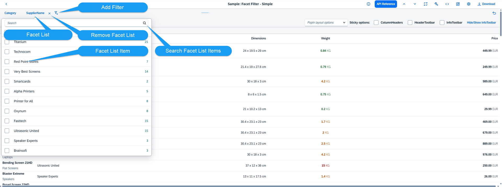
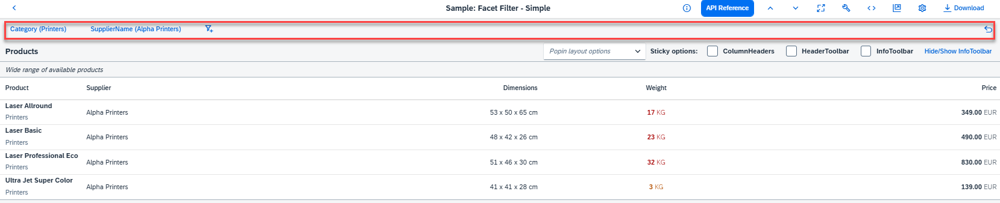

sap.m.FacetFilter) support users in finding the
information they need from potentially very large data sets.With the facet filter, users can explore a data collection by applying multiple filters along certain discrete attributes or facets of the overall data collection.
The following figure shows the structure of the facet filter in default 'Simple' type.

The facet filter supports the following two types that can be configured using the
control's type property:
Simple type
With the Simple type facet filter you can offer multiple filters ('facets') to assist the user in narrowing down the data in, say, a table. With this default 'Simple' type, each filter is displayed in a row for selectionThe simple type is the default type and available for desktop and tablets.
Light type
It is for small displays where only a selectable summary bar is shown, and a dialog is shown for setting the facet values. The "Light" type is automatically enabled on smartphone-sized devices, but is also available for desktop and tablets.
In addition, you can define Custom type facet filters by setting custom filtering criteria. For example, Custom type can be applied instead of the default filtering criteria of the control when searching in the FacetFilterList.
Your
application displays a large list of products that can be grouped by category and
supplier. With the facet filter, you allow users to dynamically filter the list so
that it displays products from the categories and suppliers they want to see. In the
following figure, the FacetFilter control is outlined in red and
will be referred to as the 'toolbar' for the user. In this example the user has set
the following filters, using the Simple type facet filter:
Category: Printers
SupplierName (Alpha Printers)
